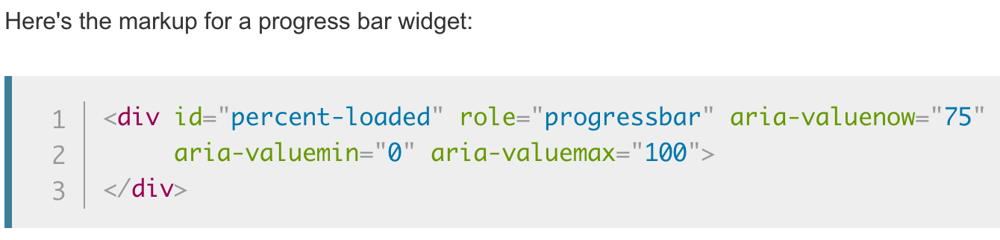

Given that web interfaces are primarily a visual medium, it's important to consider that not all vision is the same. Whether it be color deficiencies or more severe visual impairments, it is important to consider that many users may suffer issues related to vision and that systems should be designed with this in mind.
Screenreading technology is necessary for some users to navigate a page, due to low or otherwise severely impaired vision. There are a variety of things that must be integrated into a system in order to accommodate screenreading technology well.
Some major issues when it comes to accommodating screenreaders stems from text labels and wayfinding. With webpages, it is common that there are many hidden elements on a page or some things added for stylistic purposes, which, in turn, can sometimes be seen by a screenreader. This is problematic as it can cause confusion about a system for such a user.
It is possible to add labels to elements that offer more in-depth information about the element or why it is there. HTML has a variety of choices with regard to the frames that are used for elements, such as p for paragraphs or div for general purposes. The issue with some frames, like div, is that they do not offer very much information to screenreaders about the contents. With the various versions of HTML, semantic names for frames have been added, like header for header elements, and these offer more information to the screenreader about the contents.
To combat the issues with non-semantic frames, like div, we can add labels that will offer more information to the screenreader and aid the user with proper wayfinding. The addition of ARIA (Accessible Rich Internet Applications) attributes allows for the addition of more information for a screenreader to give a user for non-semantic or primarily visual elements.
The above image shows an example from the Mozilla developer page for ARIA, which shows a div with various ARIA attributes added for additional information.
"This progress bar is built using a [div], which has no meaning. Unfortunately, there isn't a more semantic tag available to developers in HTML 4, so we need to include ARIA roles and properties. These are specified by adding attributes to the element. In this example, the role="progressbar" attribute informs the browser that this element is actually a JavaScript-powered progress bar widget. The aria-valuemin and aria-valuemax attributes specify the minimum and maximum values for the progress bar, and the aria-valuenow describes the current state of it and therefore must be kept updated with JavaScript."
Source: Mozilla MDN web docs: ARIA
Thus, labels should be used diligently for elements in order to maintain proper wayfinding for users with screenreaders, especially when non-semantic identifiers are used.
On a similar note users with severe visual impairments cannot see images in the same manner as other users. It is important to consider this when using images as a navigational element or as a decorative element. With webpages, using proper alternative text for the images is necessary in ensuring a visually impaired user is able to gather the same information from it as an otherwise normal user.
Per usability.gov's Accessibility Basics page, they state that we . . . should include Alt text in the markup/code; complex images should have more extensive descriptions near the image. The following shows some examples of good and bad practices for alternative text.
Consider the logo for this site, seen in the header and just above here. This is an image which resembles text, but a screenreader normally would not recognize it as such. All that the screenreader would tell a user is the alt data in the HTML. Let's write some alt data for the image.
alt="logo"
While this is certainly a start, it is by no means good. The screenreader would tell the user that there's an image of "logo" here and nothing else. We can do better.
alt="The Design Byte logo, with design in a dark blue regular font and byte in a dark gray and bold font."
This is much better. This informs the user the contents of the image in a descriptive manner, offering similar information to viewing the image. If a screenreader read this, it would give a much better idea of what the image is.
There are a variety of things to consider with regard to screenreaders and designing systems for accommodating them, and these are just a few. Additional information and resources that can even further develop on these topics will be found in the next page.
Color deficiencies or color blindness refers to issues related to perception of colors. Per colourblindawareness.org, approximately 8% of men suffer from color deficiency. It is far less common for women to suffer from the issue, but with the 8% of men, alone, this is far too large of a population to ignore.
The most common forms of color deficiencies are with relation to the perception of red and green, with around 6% of the men suffering from one of the two varieties of red-green color deficiencies, per color-blindness.com. This means that using red and green to contrast one another in a system could be problematic for a vast number of potential users.
Take a moment to view the following buttons.
While this may be commonplace and these colors are widely agreed to be indicators of these actions, this is a hard sight to view for those with color deficiencies. Why is that?
This is how such a set of buttons would be seen for someone affected by a deuter type of color deficiency, which makes up 5% of the 8% of men with colorblindness, per color-blindness.com.
And this is how the button set would be perceived by someone affected by a protan type of color deficiency. While this only affects 1% of the overall 8% of colorblind men (color-blindness.com), alongside the other 5% with issues perceiving red and green incorrectly this does make up a large sum of people.
So it is important to avoid using problematic colors, like red and green, to represent contrast between options.
Instead, consider having the primary action or confirmation button match the branding of the system, while the secondary action or cancel button uses a grayscale coloration, like dark gray for a light background or light gray for a dark background. This conveys the same sort of concept, but without using problematic pairs of colors.
Given the manner in which color deficiencies work, there are a few lesser considered problems that come with the issue. Color deficiencies affect the strength of the rod to perceive whichever color is problematic, mainly when differentiating it with other colors. This can be particularly problematic in the realm of display technology, like computer monitors.
In the case of protan color deficiencies, this manifests with pure red on white backgrounds. Consider that red is the pixel activating the red light at 100% capability and white is red, green, and blue at 100%. With a weaker perception of red, there is difficulty with things such as red text being perceived as red when contrasted on a light background.
Am I red?
Maybe to some people, but not to all people.
Am I at least green?
The majority of color deficient people may not see green there, either.
Thus, it is important to avoid using things such as 100% red (i.e. #ff0000) or 100% green (i.e. #00ff00) to contrast with other text. See the resources in the next page for some suggestions on how to best select colors.